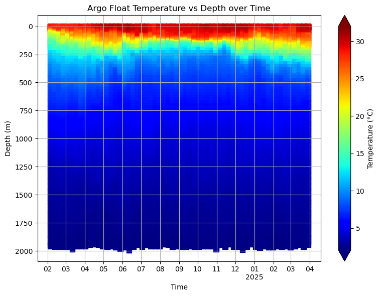
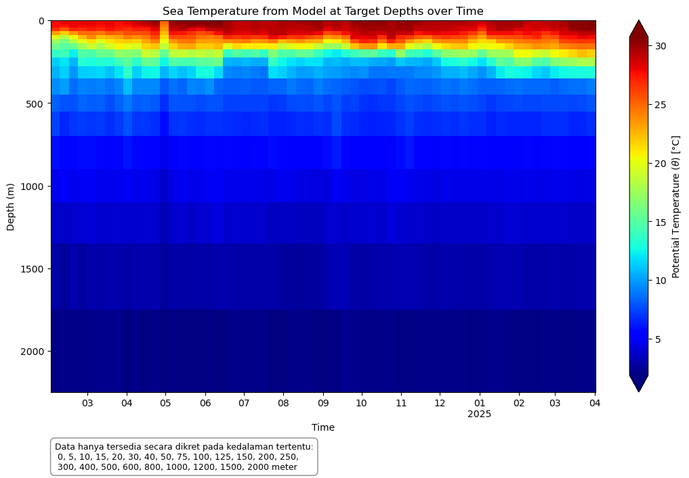
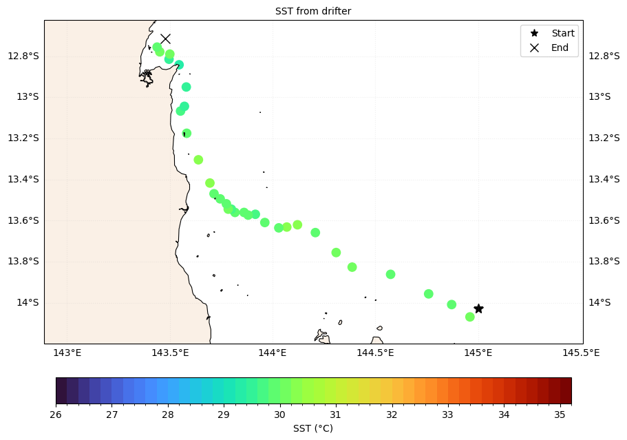
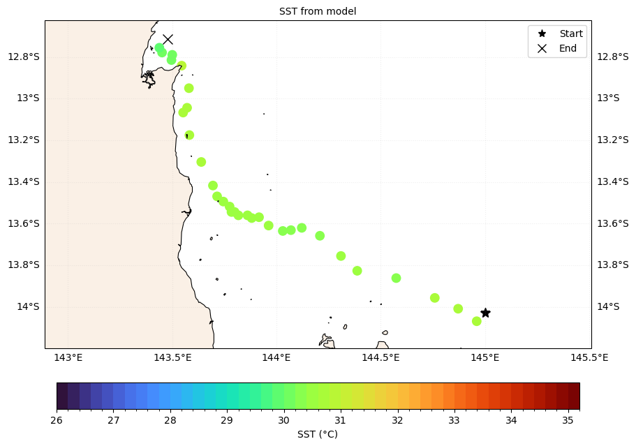

Memuat Data#
import os
import xarray as xr
import pandas as pd
import numpy as np
import gsw
import matplotlib
import matplotlib.pyplot as plt
import matplotlib.dates as mdates
from matplotlib.lines import Line2D
import cartopy.crs as ccrs
import cartopy.feature as cfeature
import matplotlib.cm as cm
Data Model#
dir_mod = '/data/local/marine-training/data/MATPEL_05/cawo_out'
paths_mod = []
for file in os.listdir(dir_mod):
if file.endswith('nc') and 'cawo' in file:
paths_mod.append(os.path.join(dir_mod, file))
paths_mod.sort()
ds_mod = xr.open_mfdataset(paths_mod)
ds_mod
<xarray.Dataset> Size: 306GB
Dimensions: (date: 419, depth: 23, lat: 1201, lon: 2201)
Coordinates:
* date (date) datetime64[ns] 3kB 2024-02-01 2024-02-02 ... 2025-03-31
* depth (depth) float32 92B 0.0 -5.0 -10.0 ... -1.2e+03 -1.5e+03 -2e+03
* lat (lat) float32 5kB -15.0 -14.98 -14.95 -14.93 ... 14.95 14.98 15.0
* lon (lon) float32 9kB 90.0 90.03 90.05 90.07 ... 144.9 145.0 145.0
Data variables:
sw_dens (date, depth, lat, lon) float32 102GB dask.array<chunksize=(5, 4, 241, 441), meta=np.ndarray>
sw_salt (date, depth, lat, lon) float32 102GB dask.array<chunksize=(5, 4, 241, 441), meta=np.ndarray>
sw_temp (date, depth, lat, lon) float32 102GB dask.array<chunksize=(5, 4, 241, 441), meta=np.ndarray>Data Argo Float#
path_argo_nc = '/data/local/marine-training/data/MATPEL_05/argo_data/nc_argo/GL_PR_PF_2902800.nc'
ds_argo = xr.open_dataset(path_argo_nc)
ds_argo
<xarray.Dataset> Size: 2MB
Dimensions: (TIME: 220, LATITUDE: 220, LONGITUDE: 220,
POSITION: 220, DEPTH: 103)
Coordinates:
* TIME (TIME) datetime64[ns] 2kB 2021-01-10T05:49:54 ....
* LATITUDE (LATITUDE) float32 880B 4.381 4.046 ... 4.243
* LONGITUDE (LONGITUDE) float32 880B 147.0 146.8 ... 130.8
Dimensions without coordinates: POSITION, DEPTH
Data variables: (12/23)
TIME_QC (TIME) float32 880B ...
POSITION_QC (POSITION) float32 880B ...
DC_REFERENCE (TIME) object 2kB ...
DIRECTION (TIME) object 2kB ...
VERTICAL_SAMPLING_SCHEME (TIME) object 2kB ...
PRES (TIME, DEPTH) float32 91kB ...
... ...
PSAL (TIME, DEPTH) float64 181kB ...
PSAL_QC (TIME, DEPTH) float32 91kB ...
PSAL_ADJUSTED (TIME, DEPTH) float64 181kB ...
PSAL_ADJUSTED_QC (TIME, DEPTH) float32 91kB ...
PSAL_ADJUSTED_DM (TIME, DEPTH) object 181kB ...
PSAL_ADJUSTED_ERROR (TIME, DEPTH) float64 181kB ...
Attributes: (12/49)
data_type: OceanSITES vertical profile
format_version: 1.4
platform_code: 2902800
institution: First Institute of Oceanography - Ministr...
institution_edmo_code: 4640
site_code:
... ...
last_date_observation: 2025-04-05T01:30:25Z
last_latitude_observation: 4.24300
last_longitude_observation: 130.82900
date_update: 2025-04-15T09:50:18Z
history: 2025-04-15T09:50:18Z : Creation
data_mode: MData Sea Surface Drifter#
# Load into dataframe
path_drifter_csv = '/data/local/marine-training/data/MATPEL_05/drifter_data/drifter_6hour_qc_f5dd_5de7_fd9d.csv'
df_drifter = pd.read_csv(path_drifter_csv)
# Display basic info and the first few rows
df_drifter
| ID | WMO | time | latitude | longitude | sst | err_sst | ve | vn | err_lat | ... | deploy_lon | start_date | start_lat | start_lon | end_date | end_lat | end_lon | drogue_lost_date | DrogueType | DrogueLength | |
|---|---|---|---|---|---|---|---|---|---|---|---|---|---|---|---|---|---|---|---|---|---|
| 0 | NaN | NaN | UTC | degrees_north | degrees_east | degree_C | degree_C | NaN | NaN | NaN | ... | degrees_east | UTC | degrees_north | degrees_east | UTC | degrees_north | degrees_east | UTC | NaN | NaN |
| 1 | 3.002340e+14 | 5102836.0 | 2024-02-01T00:00:00Z | 11.293 | 131.199 | 28.159 | 0.041 | -0.70395 | 0.12636 | 0.001 | ... | -154.965 | 2022-09-28T00:00:00Z | 3.0 | -154.98 | 2024-02-18T00:00:00Z | 8.95 | 126.31 | 2023-01-03T00:00:00Z | NaN | 6.6 m |
| 2 | 3.002340e+14 | 5102836.0 | 2024-02-01T06:00:00Z | 11.315 | 131.057 | 28.178 | 0.041 | -0.67358 | 0.19455 | 0.001 | ... | -154.965 | 2022-09-28T00:00:00Z | 3.0 | -154.98 | 2024-02-18T00:00:00Z | 8.95 | 126.31 | 2023-01-03T00:00:00Z | NaN | 6.6 m |
| 3 | 3.002340e+14 | 5102836.0 | 2024-02-01T12:00:00Z | 11.369 | 130.932 | 28.082 | 0.041 | -0.57381 | 0.30063 | 0.001 | ... | -154.965 | 2022-09-28T00:00:00Z | 3.0 | -154.98 | 2024-02-18T00:00:00Z | 8.95 | 126.31 | 2023-01-03T00:00:00Z | NaN | 6.6 m |
| 4 | 3.002340e+14 | 5102836.0 | 2024-02-01T18:00:00Z | 11.432 | 130.83 | 28.007 | 0.041 | -0.53084 | 0.22220 | 0.001 | ... | -154.965 | 2022-09-28T00:00:00Z | 3.0 | -154.98 | 2024-02-18T00:00:00Z | 8.95 | 126.31 | 2023-01-03T00:00:00Z | NaN | 6.6 m |
| ... | ... | ... | ... | ... | ... | ... | ... | ... | ... | ... | ... | ... | ... | ... | ... | ... | ... | ... | ... | ... | ... |
| 6012 | 3.005341e+14 | 4804107.0 | 2024-04-13T06:00:00Z | -4.143 | 90.235 | 29.973 | 0.065 | -0.29942 | -0.16107 | 0.015 | ... | 77.38 | 2024-01-16T00:00:00Z | -7.92 | 77.38 | NaN | NaN | NaN | NaN | NaN | 7.5 m |
| 6013 | 3.005341e+14 | 4804107.0 | 2024-04-13T12:00:00Z | -4.168 | 90.174 | 29.973 | 0.062 | -0.26649 | -0.05737 | 0.002 | ... | 77.38 | 2024-01-16T00:00:00Z | -7.92 | 77.38 | NaN | NaN | NaN | NaN | NaN | 7.5 m |
| 6014 | 3.005341e+14 | 4804107.0 | 2024-04-13T18:00:00Z | -4.165 | 90.131 | 29.931 | 0.065 | -0.22199 | 0.03832 | 0.015 | ... | 77.38 | 2024-01-16T00:00:00Z | -7.92 | 77.38 | NaN | NaN | NaN | NaN | NaN | 7.5 m |
| 6015 | 3.005341e+14 | 4804107.0 | 2024-04-14T00:00:00Z | -4.153 | 90.087 | 29.887 | 0.062 | -0.31198 | 0.07767 | 0.002 | ... | 77.38 | 2024-01-16T00:00:00Z | -7.92 | 77.38 | NaN | NaN | NaN | NaN | NaN | 7.5 m |
| 6016 | 3.005341e+14 | 4804107.0 | 2024-04-14T06:00:00Z | -4.135 | 90.01 | 29.962 | 0.065 | -0.48575 | 0.10340 | 0.015 | ... | 77.38 | 2024-01-16T00:00:00Z | -7.92 | 77.38 | NaN | NaN | NaN | NaN | NaN | 7.5 m |
6017 rows × 23 columns
Data Filtering#
Argo Data#
Membuat kriteria seleksi#
# Menyeleksi berdasarkan QC. QC Baik -> flag: 1
ds_argo_filtered = (ds_argo
.where(ds_argo['PRES_ADJUSTED_QC'] == 1)
.where(ds_argo['TEMP_ADJUSTED_QC'] == 1))
# Menyeleksi berdasarkan waktu (disesuaikan dengan ketersediaan data model untuk keperluan verifikasi)
# serta berada di wilayah domain model
t_start = pd.to_datetime("2024-02-01")
t_end = pd.to_datetime("2025-04-01")
ext_indo = [90, 145, -15, 15]
# 1. Mengambil nilai dari dimensi
lat = ds_argo_filtered['LATITUDE'].values
lon = ds_argo_filtered['LONGITUDE'].values
tm = pd.to_datetime(ds_argo_filtered['TIME'].values)
# 2. Buat mask lokasi: hanya posisi dalam batas wilayah Indonesia
mask_pos = (lon >= ext_indo[0]) & (lon <= ext_indo[1]) & (lat >= ext_indo[2]) & (lat <= ext_indo[3])
# 3. Buat mask waktu: hanya waktu dalam rentang yang ditentukan
mask_tm = (tm >= t_start) & (tm <= t_end)
# 4. Gabungkan kedua mask (lokasi dan waktu)
mask_combined = mask_pos & mask_tm
# 5. Indeks data yang lolos seleksi
valid_indices = np.where(mask_combined)[0]
print(f"Indeks/cycle yang lolos seleksi: {valid_indices}")
Indeks/cycle yang lolos seleksi: [159 160 161 162 163 164 165 166 167 168 169 170 171 172 173 174 175 176
177 178 179 180 181 182 183 184 185 186 187 188 189 190 191 192 193 194
195 196 197 198 199 200 201 202 203 204 205 206 207 208 209 210 211 212
213 214 215 216 217 218]
Mengambil irisan data sesuai dengan kriteria seleksi#
ds_argo_filtered = ds_argo_filtered.sel(TIME=mask_combined, LATITUDE=mask_combined, LONGITUDE=mask_combined, POSITION=valid_indices)
ds_argo_filtered['POSITION'] = ('TIME', ds_argo['POSITION'].values[valid_indices])
ds_argo_filtered
<xarray.Dataset> Size: 2MB
Dimensions: (TIME: 60, DEPTH: 103, POSITION: 60,
LATITUDE: 60, LONGITUDE: 60)
Coordinates:
* TIME (TIME) datetime64[ns] 480B 2024-02-05T01:30:26 ...
* LATITUDE (LATITUDE) float32 240B 4.764 4.568 ... 4.038
* LONGITUDE (LONGITUDE) float32 240B 130.1 129.8 ... 131.1
POSITION (TIME) int64 480B 159 160 161 162 ... 216 217 218
Dimensions without coordinates: DEPTH
Data variables: (12/23)
TIME_QC (TIME, DEPTH) float32 25kB 1.0 1.0 1.0 ... nan nan
POSITION_QC (POSITION, TIME, DEPTH) float32 1MB 1.0 ... nan
DC_REFERENCE (TIME, DEPTH) object 49kB b'93359759' ... nan
DIRECTION (TIME, DEPTH) object 49kB b'A' b'A' ... nan nan
VERTICAL_SAMPLING_SCHEME (TIME, DEPTH) object 49kB b'Synthetic sampling'...
PRES (TIME, DEPTH) float32 25kB 0.0 0.6 1.9 ... nan nan
... ...
PSAL (TIME, DEPTH) float64 49kB 34.02 34.06 ... nan nan
PSAL_QC (TIME, DEPTH) float32 25kB 1.0 1.0 1.0 ... nan nan
PSAL_ADJUSTED (TIME, DEPTH) float64 49kB 34.02 34.06 ... nan nan
PSAL_ADJUSTED_QC (TIME, DEPTH) float32 25kB 1.0 1.0 1.0 ... nan nan
PSAL_ADJUSTED_DM (TIME, DEPTH) object 49kB b'D' b'D' ... nan nan
PSAL_ADJUSTED_ERROR (TIME, DEPTH) float64 49kB 0.009 0.009 ... nan nan
Attributes: (12/49)
data_type: OceanSITES vertical profile
format_version: 1.4
platform_code: 2902800
institution: First Institute of Oceanography - Ministr...
institution_edmo_code: 4640
site_code:
... ...
last_date_observation: 2025-04-05T01:30:25Z
last_latitude_observation: 4.24300
last_longitude_observation: 130.82900
date_update: 2025-04-15T09:50:18Z
history: 2025-04-15T09:50:18Z : Creation
data_mode: MOcean Surface Drifter Data#
# Data sudah terseleksi saat akuisisi, hanya perlu menyesuaikan format data dan merapihkan data tabel
# Ambil baris pertama sebagai header yang benar
new_header = np.asarray(df_drifter.columns)
df_drifter_adjs = df_drifter[1:]
df_drifter_adjs.columns = new_header
# Drop rows dengan ID, latitude, atau longitude kosong
df_drifter_adjs = df_drifter_adjs.dropna(subset=["ID", "latitude", "longitude"])
# Konversi tipe data yang diperlukan
df_drifter_adjs["ID"] = df_drifter_adjs["ID"].astype(int)
df_drifter_adjs["latitude"] = df_drifter_adjs["latitude"].astype(float)
df_drifter_adjs["longitude"] = df_drifter_adjs["longitude"].astype(float)
df_drifter_adjs["time"] = pd.to_datetime(df_drifter_adjs["time"], format="%Y-%m-%dT%H:%M:%SZ")
df_drifter_adjs["start_date"] = pd.to_datetime(df_drifter_adjs["start_date"], format="%Y-%m-%dT%H:%M:%SZ")
df_drifter_adjs["deploy_date"] = pd.to_datetime(df_drifter_adjs["deploy_date"], format="%Y-%m-%dT%H:%M:%SZ")
df_drifter_adjs["end_date"] = pd.to_datetime(df_drifter_adjs["end_date"], format="%Y-%m-%dT%H:%M:%SZ")
df_drifter_adjs["drogue_lost_date"] = pd.to_datetime(df_drifter_adjs["drogue_lost_date"], format="%Y-%m-%dT%H:%M:%SZ")
# Ambil ID unik
unique_ids = df_drifter_adjs["ID"].unique()
# Tampilkan jumlah dan sampel ID
len(unique_ids), [int(i) for i in unique_ids[:5]]
(37,
[300234010820530,
300234010827560,
300234010828550,
300234010829560,
300234060253330])
# Menampilkan data drifter yang sudah disesuaikan
df_drifter_adjs
| ID | WMO | time | latitude | longitude | sst | err_sst | ve | vn | err_lat | ... | deploy_lon | start_date | start_lat | start_lon | end_date | end_lat | end_lon | drogue_lost_date | DrogueType | DrogueLength | |
|---|---|---|---|---|---|---|---|---|---|---|---|---|---|---|---|---|---|---|---|---|---|
| 1 | 300234010820530 | 5102836.0 | 2024-02-01 00:00:00 | 11.293 | 131.199 | 28.159 | 0.041 | -0.70395 | 0.12636 | 0.001 | ... | -154.965 | 2022-09-28 | 3.0 | -154.98 | 2024-02-18 | 8.95 | 126.31 | 2023-01-03 | NaN | 6.6 m |
| 2 | 300234010820530 | 5102836.0 | 2024-02-01 06:00:00 | 11.315 | 131.057 | 28.178 | 0.041 | -0.67358 | 0.19455 | 0.001 | ... | -154.965 | 2022-09-28 | 3.0 | -154.98 | 2024-02-18 | 8.95 | 126.31 | 2023-01-03 | NaN | 6.6 m |
| 3 | 300234010820530 | 5102836.0 | 2024-02-01 12:00:00 | 11.369 | 130.932 | 28.082 | 0.041 | -0.57381 | 0.30063 | 0.001 | ... | -154.965 | 2022-09-28 | 3.0 | -154.98 | 2024-02-18 | 8.95 | 126.31 | 2023-01-03 | NaN | 6.6 m |
| 4 | 300234010820530 | 5102836.0 | 2024-02-01 18:00:00 | 11.432 | 130.830 | 28.007 | 0.041 | -0.53084 | 0.22220 | 0.001 | ... | -154.965 | 2022-09-28 | 3.0 | -154.98 | 2024-02-18 | 8.95 | 126.31 | 2023-01-03 | NaN | 6.6 m |
| 5 | 300234010820530 | 5102836.0 | 2024-02-02 00:00:00 | 11.455 | 130.722 | 27.968 | 0.041 | -0.54977 | -0.01695 | 0.001 | ... | -154.965 | 2022-09-28 | 3.0 | -154.98 | 2024-02-18 | 8.95 | 126.31 | 2023-01-03 | NaN | 6.6 m |
| ... | ... | ... | ... | ... | ... | ... | ... | ... | ... | ... | ... | ... | ... | ... | ... | ... | ... | ... | ... | ... | ... |
| 6012 | 300534064403780 | 4804107.0 | 2024-04-13 06:00:00 | -4.143 | 90.235 | 29.973 | 0.065 | -0.29942 | -0.16107 | 0.015 | ... | 77.38 | 2024-01-16 | -7.92 | 77.38 | NaT | NaN | NaN | NaT | NaN | 7.5 m |
| 6013 | 300534064403780 | 4804107.0 | 2024-04-13 12:00:00 | -4.168 | 90.174 | 29.973 | 0.062 | -0.26649 | -0.05737 | 0.002 | ... | 77.38 | 2024-01-16 | -7.92 | 77.38 | NaT | NaN | NaN | NaT | NaN | 7.5 m |
| 6014 | 300534064403780 | 4804107.0 | 2024-04-13 18:00:00 | -4.165 | 90.131 | 29.931 | 0.065 | -0.22199 | 0.03832 | 0.015 | ... | 77.38 | 2024-01-16 | -7.92 | 77.38 | NaT | NaN | NaN | NaT | NaN | 7.5 m |
| 6015 | 300534064403780 | 4804107.0 | 2024-04-14 00:00:00 | -4.153 | 90.087 | 29.887 | 0.062 | -0.31198 | 0.07767 | 0.002 | ... | 77.38 | 2024-01-16 | -7.92 | 77.38 | NaT | NaN | NaN | NaT | NaN | 7.5 m |
| 6016 | 300534064403780 | 4804107.0 | 2024-04-14 06:00:00 | -4.135 | 90.010 | 29.962 | 0.065 | -0.48575 | 0.10340 | 0.015 | ... | 77.38 | 2024-01-16 | -7.92 | 77.38 | NaT | NaN | NaN | NaT | NaN | 7.5 m |
6016 rows × 23 columns
Visualisasi Data#
Membuat diagram Hovmoller dari data argo#
Menggunakan sea water pressure sebagai layer kedalaman#
# Ambil variabel penting
time = ds_argo_filtered['TIME'].values # shape: (TIME,)
press = ds_argo_filtered['PRES_ADJUSTED'].values # shape: (TIME, DEPTH)
temp = ds_argo_filtered['TEMP_ADJUSTED'].values # shape: (TIME, DEPTH)
# Ulangi time sebanyak jumlah depth (103)
n_time, n_depth = press.shape
time_2d = np.repeat(time[:, np.newaxis], n_depth, axis=1) # shape: (TIME, DEPTH)
# Flatten semua
time_flat = time_2d.flatten()
press_flat = press.flatten()
temp_flat = temp.flatten()
# Hapus NaN (masking)
valid = ~np.isnan(press_flat) & ~np.isnan(temp_flat)
time_flat = time_flat[valid]
press_flat = press_flat[valid]
temp_flat = temp_flat[valid]
# Flatten time
time_flat_datetime = np.array([pd.to_datetime(t).to_pydatetime() for t in time_flat])
# Plot
fig, ax = plt.subplots(figsize=(8, 8/(4/3)))
sc = ax.scatter(time_flat_datetime, press_flat, c=temp_flat, cmap='jet', s=60, marker='s')
ax.invert_yaxis()
plt.colorbar(sc, label="Temperature (°C)", extend='both')
ax.set_xlabel("Time")
ax.set_ylabel("Sea Water Pressure (dbar)")
ax.set_title("Argo Float Temperature vs Pressure over Time")
ax.grid(True)
# Set ticks setiap bulan
ax.xaxis.set_major_locator(mdates.MonthLocator())
# Custom formatter: tampilkan bulan, dan tahun jika Januari
def custom_date_formatter(x, pos):
dt = mdates.num2date(x)
if dt.month == 1:
return f"{dt:%m}\n{dt.year}"
else:
return f"{dt:%m}"
ax.xaxis.set_major_formatter(plt.FuncFormatter(custom_date_formatter))
# Rotasi agar rapi
plt.setp(ax.get_xticklabels(), rotation=0, ha='center')
plt.tight_layout()
plt.show()
Menggunakan sea depth sebagai layer kedalaman#
# Ekstrak variabel yang dibutuhkan dari dataset
time = ds_argo_filtered["TIME"].values # shape: (TIME,)
press = ds_argo_filtered["PRES_ADJUSTED"].values # shape: (TIME, DEPTH)
temp = ds_argo_filtered["TEMP_ADJUSTED"].values # shape: (TIME, DEPTH)
latitude = ds_argo_filtered["LATITUDE"].values # shape: (TIME,)
# Konversi tekanan ke kedalaman (dalam meter) menggunakan lintang sesuai TIME
depth = -gsw.z_from_p(press, latitude[:, np.newaxis]) # shape: (TIME, DEPTH)
# Buat time array 2D agar bisa di-flatten bareng dengan variabel lainnya
n_time, n_depth = press.shape
time_2d = np.repeat(time[:, np.newaxis], n_depth, axis=1) # shape: (TIME, DEPTH)
# Flatten semua array
time_flat = time_2d.flatten()
depth_flat = depth.flatten()
temp_flat = temp.flatten()
# Masking untuk menghapus nilai NaN
valid = ~np.isnan(depth_flat) & ~np.isnan(temp_flat)
time_flat = time_flat[valid]
depth_flat = depth_flat[valid]
temp_flat = temp_flat[valid]
# Konversi waktu ke datetime untuk plotting
time_flat_datetime = np.array([pd.to_datetime(t).to_pydatetime() for t in time_flat])
# Plot Hovmöller diagram (Time vs Depth, colored by Temperature)
fig, ax = plt.subplots(figsize=(8, 8/(4/3)))
sc = ax.scatter(time_flat_datetime, depth_flat, c=temp_flat, cmap='jet', s=60, marker='s')
ax.invert_yaxis()
plt.colorbar(sc, label="Temperature (°C)", extend='both')
ax.set_xlabel("Time")
ax.set_ylabel("Depth (m)")
ax.set_title("Argo Float Temperature vs Depth over Time")
ax.grid(True)
# Format sumbu X agar tampil bulanan
ax.xaxis.set_major_locator(mdates.MonthLocator())
# Custom formatter untuk sumbu X
def custom_date_formatter(x, pos):
dt = mdates.num2date(x)
if dt.month == 1:
return f"{dt:%m}\n{dt.year}"
else:
return f"{dt:%m}"
ax.xaxis.set_major_formatter(plt.FuncFormatter(custom_date_formatter))
plt.setp(ax.get_xticklabels(), rotation=0, ha='center')
plt.tight_layout()
plt.show()

Plot data model#
Esktraksi data dan membuat dataframe#
# Ekstrak Data model berdasarkan lat/lon/time data obs
argo_lats = ds_argo_filtered['LATITUDE'].values
argo_lons = ds_argo_filtered['LONGITUDE'].values
argo_time = pd.to_datetime(ds_argo_filtered['TIME'].values)
mod_temps_val = []
for i, dt in enumerate(argo_time):
argLat = argo_lats[i]
argLon = argo_lons[i]
ds0 = ds_mod.sel(date=dt, lat=argLat, lon=argLon, method='nearest')
mod_temps_val.append(ds0['sw_temp'].values)
# Buat dataframe untuk suhu pada kedalaman target dari data model
df_mod_temp = pd.DataFrame(mod_temps_val, columns=np.abs(ds_mod.depth.values))
df_mod_temp['TIME'] = argo_time
df_mod_temp.set_index('TIME', inplace=True)
df_mod_temp = df_mod_temp.transpose()
df_mod_temp.index.name = 'Depth (m)'
df_mod_temp.columns.name = 'Time'
df_mod_temp
Exception ignored in: <bound method IPythonKernel._clean_thread_parent_frames of <ipykernel.ipkernel.IPythonKernel object at 0x7f98b1ad3620>>
Traceback (most recent call last):
File "/opt/conda/envs/ofs/lib/python3.13/site-packages/ipykernel/ipkernel.py", line 775, in _clean_thread_parent_frames
def _clean_thread_parent_frames(
KeyboardInterrupt:
Plot Data#
# Ambil data
df_temp_sorted = df_mod_temp.sort_index(ascending=True)
# Waktu dan kedalaman
times = pd.to_datetime(df_temp_sorted.columns.values)
depths = df_temp_sorted.index.values.astype(float)
# Konversi ke edge arrays
time_edges = mdates.date2num(times)
depth_edges = depths
# Tambah 1 nilai di ujung agar jumlah edge = jumlah data + 1
def get_edges(arr):
delta = np.diff(arr) / 2
edges = np.concatenate([[arr[0] - delta[0]], arr[:-1] + delta, [arr[-1] + delta[-1]]])
return edges
time_edges = get_edges(time_edges)
depth_edges = get_edges(depths)
# Data suhu
temperature_2d = df_temp_sorted.values.astype(float)
# Plot
fig, ax = plt.subplots(figsize=(11, 11/(10/6)))
pcm = ax.pcolormesh(mdates.num2date(time_edges), depth_edges, temperature_2d, cmap='jet', shading='auto')
ax.invert_yaxis()
# Format dan label
plt.colorbar(pcm, label=r"Potential Temperature ($\theta$) [°C]", extend='both')
ax.set_xlabel("Time")
ax.set_ylabel("Depth (m)")
ax.set_title("Sea Temperature from Model at Target Depths over Time")
# Format sumbu waktu
def custom_date_formatter(x, pos):
dt = mdates.num2date(x)
return f"{dt:%m}\n{dt.year}" if dt.month == 1 else f"{dt:%m}"
ax.xaxis.set_major_locator(mdates.MonthLocator())
ax.xaxis.set_major_formatter(plt.FuncFormatter(custom_date_formatter))
plt.setp(ax.get_xticklabels(), rotation=0, ha='center')
# Teks penjelas di luar plot dengan kotak
depth_note = (
"Data hanya tersedia secara dikret pada kedalaman tertentu:\n "
"0, 5, 10, 15, 20, 30, 40, 50, 75, 100, 125, 150, 200, 250,\n "
"300, 400, 500, 600, 800, 1000, 1200, 1500, 2000 meter"
)
fig.text(
0.078, -0.06, depth_note,
ha='left', fontsize=9, color='black',
bbox=dict(facecolor='white', edgecolor='gray', boxstyle='round,pad=0.5', alpha=0.9)
)
plt.tight_layout()
plt.show()

Memetakan data drifter#
Memilih data berdasarkan ID dan data yang dibutuhkan#
df_drifter2plot = df_drifter_adjs.loc[df_drifter_adjs['ID'] == 300234061473430][['ID', 'time', 'latitude', 'longitude', 'sst']]
df_drifter2plot.set_index(['time'], inplace=True)
df_drifter2plot
| ID | latitude | longitude | sst | |
|---|---|---|---|---|
| time | ||||
| 2024-03-01 06:00:00 | 300234061473430 | -14.068 | 144.960 | 30.078 |
| 2024-03-01 12:00:00 | 300234061473430 | -14.008 | 144.871 | 29.994 |
| 2024-03-01 18:00:00 | 300234061473430 | -13.956 | 144.759 | 29.961 |
| 2024-03-02 00:00:00 | 300234061473430 | -13.861 | 144.574 | 29.993 |
| 2024-03-02 06:00:00 | 300234061473430 | -13.826 | 144.387 | 30.085 |
| 2024-03-02 12:00:00 | 300234061473430 | -13.755 | 144.309 | 30.052 |
| 2024-03-02 18:00:00 | 300234061473430 | -13.658 | 144.208 | 29.968 |
| 2024-03-03 00:00:00 | 300234061473430 | -13.620 | 144.121 | 30.277 |
| 2024-03-03 06:00:00 | 300234061473430 | -13.631 | 144.069 | 30.201 |
| 2024-03-03 12:00:00 | 300234061473430 | -13.635 | 144.030 | 29.931 |
| 2024-03-03 18:00:00 | 300234061473430 | -13.609 | 143.962 | 29.889 |
| 2024-03-04 00:00:00 | 300234061473430 | -13.569 | 143.916 | 29.71 |
| 2024-03-04 06:00:00 | 300234061473430 | -13.573 | 143.881 | 29.843 |
| 2024-03-04 12:00:00 | 300234061473430 | -13.560 | 143.861 | 29.893 |
| 2024-03-04 18:00:00 | 300234061473430 | -13.560 | 143.817 | 29.899 |
| 2024-03-05 00:00:00 | 300234061473430 | -13.544 | 143.799 | 29.795 |
| 2024-03-05 06:00:00 | 300234061473430 | -13.544 | 143.784 | 30.079 |
| 2024-03-05 12:00:00 | 300234061473430 | -13.518 | 143.775 | 29.913 |
| 2024-03-05 18:00:00 | 300234061473430 | -13.494 | 143.745 | 29.934 |
| 2024-03-06 00:00:00 | 300234061473430 | -13.469 | 143.715 | 29.995 |
| 2024-03-06 06:00:00 | 300234061473430 | -13.417 | 143.695 | 30.384 |
| 2024-03-06 12:00:00 | 300234061473430 | -13.304 | 143.639 | 30.251 |
| 2024-03-06 18:00:00 | 300234061473430 | -13.175 | 143.582 | 29.989 |
| 2024-03-07 00:00:00 | 300234061473430 | -13.067 | 143.552 | 29.743 |
| 2024-03-07 06:00:00 | 300234061473430 | -13.044 | 143.571 | 29.468 |
| 2024-03-07 12:00:00 | 300234061473430 | -12.950 | 143.580 | 29.422 |
| 2024-03-07 18:00:00 | 300234061473430 | -12.842 | 143.545 | 29.214 |
| 2024-03-08 00:00:00 | 300234061473430 | -12.815 | 143.496 | 29.48 |
| 2024-03-08 06:00:00 | 300234061473430 | -12.790 | 143.500 | 30.184 |
| 2024-03-08 12:00:00 | 300234061473430 | -12.779 | 143.451 | 30.044 |
| 2024-03-08 18:00:00 | 300234061473430 | -12.756 | 143.438 | 29.996 |
Menampilkan peta#
from mods import compute_extent
lons, lats = df_drifter2plot['longitude'].values, df_drifter2plot['latitude'].values
dts = pd.to_datetime(df_drifter2plot.index.values)
sst = df_drifter2plot['sst'].astype(float).values
# Final extent
exts = compute_extent(lons, lats)
# Basemap
proj = ccrs.PlateCarree()
rat=10/6
fig, ax = plt.subplots(figsize=(11, 11/rat), subplot_kw=dict(projection=proj))
ax.set_extent(exts, crs=proj)
ax.add_feature(cfeature.GSHHSFeature(scale="high", levels=[1, 2, 3, 4], facecolor="linen"), linewidth=.8)
ax.add_feature(cfeature.BORDERS, linestyle=":")
# Level SST
vmin, vmax, step = 26, 35, 0.2
levels = np.arange(vmin, vmax + step, step)
# Buat colormap dan norm untuk diskritisasi warna
cmap = cm.get_cmap('turbo', len(levels) - 1) # colormap discrete
norm = matplotlib.colors.BoundaryNorm(boundaries=levels, ncolors=cmap.N)
# Buat keterangan start dan end untuk rute drifter
ax.plot(lons[0]+.04, lats[0]+.04, marker='*', color='k', markersize=10, transform=proj, label='Start')
ax.plot(lons[-1]+.04, lats[-1]+.04, marker='x', color='k', markersize=10, transform=proj, label='End')
# Buat scatter plot
sctmod = ax.scatter(
lons, lats, transform=proj, alpha=1.0, marker='o',
c=sst, s=80, cmap=cmap, norm=norm
)
# Buat colorbar
cbar = plt.colorbar(sctmod,
ax=ax,
orientation='horizontal',
shrink=0.7,
pad=0.08,
extend=None)
cbar.set_label("SST (°C)")
# Gridlines (Lintang-bujur)
gl = ax.gridlines(draw_labels=True, linestyle=':', alpha=.2)
gl.top_labels = False
gl.left_labels = True
gl.right_labels = True
gl.bottom_labels = True
# Legenda
legend_elements = [
Line2D([0], [0], lw=0, marker='*', color='k', label='Start', markersize=8),
Line2D([0], [0], lw=0, marker='x', color='k', label='End', markersize=8)
]
ax.legend(handles=legend_elements, loc='upper right')
# Judul
ax.set_title('SST from drifter', fontsize=10)
# Menyesuaikan layout dan menampilkan plot
plt.tight_layout()
plt.show()

Plot data model#
Ekstraksi data dan membuat dataframe#
# Ekstrak Data model berdasarkan lat/lon/time data drifter
lons, lats = df_drifter2plot['longitude'].values, df_drifter2plot['latitude'].values
drf_time = pd.to_datetime(df_drifter2plot.index.values)
mod_temps_val = []
mod_tms = []
for i, dt in enumerate(drf_time):
drfLat = lats[i]
drfLon = lons[i]
ds0 = ds_mod.sel(date=dt.strftime('%Y-%m-%d'), depth=0., lat=drfLat, lon=drfLon, method='nearest')
mod_temps_val.append(ds0['sw_temp'].values)
mod_tms.append(ds0.date.values)
# Buat dataframe untuk suhu pada kedalaman target dari data model
df_mod_temp = pd.DataFrame(
data={
'time': pd.to_datetime(mod_tms),
'latitude': lats,
'longitude': lons,
'sst': mod_temps_val
}
)
df_mod_temp.set_index(['time'], inplace=True)
df_mod_temp
| latitude | longitude | sst | |
|---|---|---|---|
| time | |||
| 2024-03-01 | -14.068 | 144.960 | 30.765625 |
| 2024-03-01 | -14.008 | 144.871 | 30.679688 |
| 2024-03-01 | -13.956 | 144.759 | 30.625 |
| 2024-03-02 | -13.861 | 144.574 | 30.34375 |
| 2024-03-02 | -13.826 | 144.387 | 30.429688 |
| 2024-03-02 | -13.755 | 144.309 | 30.421875 |
| 2024-03-02 | -13.658 | 144.208 | 30.304688 |
| 2024-03-03 | -13.620 | 144.121 | 30.328125 |
| 2024-03-03 | -13.631 | 144.069 | 30.359375 |
| 2024-03-03 | -13.635 | 144.030 | 30.390625 |
| 2024-03-03 | -13.609 | 143.962 | 30.421875 |
| 2024-03-04 | -13.569 | 143.916 | 30.539062 |
| 2024-03-04 | -13.573 | 143.881 | 30.570312 |
| 2024-03-04 | -13.560 | 143.861 | 30.578125 |
| 2024-03-04 | -13.560 | 143.817 | 30.59375 |
| 2024-03-05 | -13.544 | 143.799 | 30.414062 |
| 2024-03-05 | -13.544 | 143.784 | 30.4375 |
| 2024-03-05 | -13.518 | 143.775 | 30.4375 |
| 2024-03-05 | -13.494 | 143.745 | 30.46875 |
| 2024-03-06 | -13.469 | 143.715 | 30.5 |
| 2024-03-06 | -13.417 | 143.695 | 30.546875 |
| 2024-03-06 | -13.304 | 143.639 | 30.617188 |
| 2024-03-06 | -13.175 | 143.582 | 30.75 |
| 2024-03-07 | -13.067 | 143.552 | 30.78125 |
| 2024-03-07 | -13.044 | 143.571 | 30.734375 |
| 2024-03-07 | -12.950 | 143.580 | 30.789062 |
| 2024-03-07 | -12.842 | 143.545 | 30.867188 |
| 2024-03-08 | -12.815 | 143.496 | 30.046875 |
| 2024-03-08 | -12.790 | 143.500 | 30.015625 |
| 2024-03-08 | -12.779 | 143.451 | 30.015625 |
| 2024-03-08 | -12.756 | 143.438 | 29.984375 |
Plot data#
lons, lats = df_mod_temp['longitude'].values, df_mod_temp['latitude'].values
dts = pd.to_datetime(df_mod_temp.index.values)
sst = df_mod_temp['sst'].astype(float).values
# Final extent
exts = compute_extent(lons, lats)
# Basemap
proj = ccrs.PlateCarree()
rat=10/6
fig, ax = plt.subplots(figsize=(11, 11/rat), subplot_kw=dict(projection=proj))
ax.set_extent(exts, crs=proj)
ax.add_feature(cfeature.GSHHSFeature(scale="high", levels=[1, 2, 3, 4], facecolor="linen"), linewidth=.8)
ax.add_feature(cfeature.BORDERS, linestyle=":")
# Level SST
vmin, vmax, step = 26, 35, 0.2
levels = np.arange(vmin, vmax + step, step)
# Buat colormap dan norm untuk diskritisasi warna
cmap = cm.get_cmap('turbo', len(levels) - 1) # colormap discrete
norm = matplotlib.colors.BoundaryNorm(boundaries=levels, ncolors=cmap.N)
# Buat keterangan start dan end untuk rute drifter
ax.plot(lons[0]+.04, lats[0]+.04, marker='*', color='k', markersize=10, transform=proj, label='Start')
ax.plot(lons[-1]+.04, lats[-1]+.04, marker='x', color='k', markersize=10, transform=proj, label='End')
# Buat scatter plot
sctmod = ax.scatter(
lons, lats, transform=proj, alpha=1.0, marker='o',
c=sst, s=80, cmap=cmap, norm=norm
)
# Buat colorbar
cbar = plt.colorbar(sctmod,
ax=ax,
orientation='horizontal',
shrink=0.7,
pad=0.08,
extend=None)
cbar.set_label("SST (°C)")
# Gridlines (Lintang-bujur)
gl = ax.gridlines(draw_labels=True, linestyle=':', alpha=.2)
gl.top_labels = False
gl.left_labels = True
gl.right_labels = True
gl.bottom_labels = True
# Legenda
legend_elements = [
Line2D([0], [0], lw=0, marker='*', color='k', label='Start', markersize=8),
Line2D([0], [0], lw=0, marker='x', color='k', label='End', markersize=8)
]
ax.legend(handles=legend_elements, loc='upper right')
# Judul
ax.set_title('SST from model', fontsize=10)
# Menyesuaikan layout dan menampilkan plot
plt.tight_layout()
plt.show()
